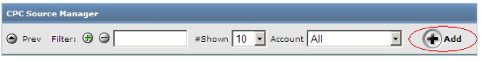
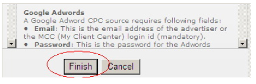

Fuentes de CPC (coste por clic) (Urchin 6.5+)
Urchin 6.5 incluye un nuevo tipo de fuente de datos: la fuente de coste por clic (CPC). Las fuentes de CPC, que se parecen en cierta medida a las fuentes del archivo de registro, permiten la extracción automática de los datos de campaña de CPC procedentes de fuentes externas. Están enlazadas a perfiles existentes tales como las fuentes del archivo de registro y los filtros, y permiten la inclusión automática de los datos de CPC en los informes de Urchin. Las fuentes de CPC se pueden crear para Google AdWords (Urchin 6.5+) y para Yahoo! Search Marketing (Urchin 6.6+).
Nota: debido a las limitaciones que presenta la versión para principiantes de AdWords, las fuentes de CPC no funcionan en las cuentas de esta versión. Para usar este tipo de fuentes, deberá pasar a la versión estándar de AdWords.
Información importante sobre la actualización de la versión 6.500 a la versión 6.501: al actualizar de la versión 6.500 a la 6.501, deberá eliminar manualmente los datos de CPC antiguos. Para ello, elimine el contenido de los directorios siguientes:
<path_to_urchin_6500_installation>/data/cpc/... <path_to_urchin_6500_installation>/data/history/cpc/...
Administrador de fuentes de CPC
Encontrará esta sección en “Configuración” > “Perfiles de Urchin” (Urchin 6.5 +).

El Administrador de fuentes de CPC muestra una lista de las fuentes de coste por clic (CPC) que se han configurado en la versión vigente de Urchin y contiene controles de interfaz de usuario que permiten al administrador crear y modificar fuentes de CPC.
Creación de una fuente de CPC nueva
Para añadir y configurar una fuente de CPC nueva, haga clic en el botón “Añadir” situado en la parte superior derecha del Administrador de fuentes de CPC.

Con esto, se abre el "Asistente para añadir fuentes de CPC", que le ayudará a añadir y a configurar una fuente de CPC.
En el primer paso del Asistente, rellene la información siguiente:
- “Cuenta opcional”: indique a qué cuenta se enlazará la fuente de CPC que acaba de añadir (solo en el modo Centro de datos).
- “Nombre de la fuente de CPC”: indique el nombre de la fuente de CPC.
- “Tipo de fuente de CPC”:
Google AdWords
“Correo electrónico”:* correo electrónico de acceso a la cuenta de AdWords en cuestión o los datos de acceso a una cuenta de Mi centro de clientes (MCC).
- “Contraseña”:* contraseña de la cuenta a la que se accede.
“Token de programador”: se trata de una cadena exclusiva que identifica a un programador autorizado del API de AdWords (opcional). Urchin se suministra con un token de programador predeterminado, de modo que, a menos que tenga intención de utilizar el suyo propio, deberá dejar este campo vacío.
“Token de aplicación”: se trata del token que se utilizará para acceder al API de AdWords. Al igual que sucede con el token de programador, este campo puede dejarse vacío.
- “Dirección de correo electrónico del cliente”: en el caso de los datos de acceso a una cuenta de MCC (la dirección de correo electrónico sirve como acceso a las cuentas de MCC), se trata de la dirección de correo electrónico de la cuenta cliente a la que se accede.
“ID de cliente”: en el caso de los datos de acceso a una cuenta de MCC, se trata de la identificación de cliente de la cuenta de AdWords en cuestión (es una secuencia numérica del tipo 123-456-7890 que aparece en la esquina superior derecha de la pantalla de Google AdWords). Si lo desea, puede facilitar esta identificación en lugar de la dirección de correo electrónico del cliente.
Para confirmar la configuración de la fuente de CPC, pulse el botón "“Probar la fuente de CPC”".

Yahoo! Search Marketing
- “Nombre de usuario”:* se trata del nombre de usuario de la cuenta de YSM en cuestión. Puede ser la dirección de correo electrónico del anunciante o la de la agencia que accede al informe en nombre del anunciante.
- “Contraseña”:* se trata de la contraseña de la cuenta de YSM en cuestión.
- “ID de la cuenta principal”:* se trata de la identificación de la cuenta principal del anunciante.
- “ID de la cuenta”:* se trata de la identificación de la cuenta del anunciante.
- “Clave de la licencia”: es la clave de licencia del usuario, anunciante o agencia que accede a la cuenta.
- “Nombre de usuario del usuario en nombre del cual se accede”: es el nombre de usuario del anunciante en nombre del cual se accede. Este campo es necesario únicamente si el nombre de acceso es de una agencia y no del propio anunciante (opcional).
- “Contraseña del usuario en nombre del cual se accede”: es la contraseña del anunciante con la que se accede a la cuenta (opcional).
Haga clic en el botón '“Finalizar”' para completar el proceso.

Edición de la fuente de CPC
Una vez que se haya añadido la fuente de CPC, puede modificar su configuración, eliminarla o bien programarla para su descarga.

Para modificar la configuración de una fuente de CPC, haga clic en el botón “Editar” junto a la fuente en cuestión.

Puede cambiar la configuración de acceso de una cuenta de AdWords o de YSM, así como habilitar o inhabilitar las descargas futuras de esa fuente de CPC. NOTA: aunque decida inhabilitar descargas futuras de los informes, los perfiles enlazados a esa fuente de CPC seguirán utilizando informes ya descargados.
En la pestaña '“Perfiles”', puede enlazar la fuente de CPC a uno o a varios perfiles existentes. La lista de perfiles que pueden enlazarse se limita a la cuenta de Urchin. Los datos de CPC de las fuentes de CPC enlazadas aparecerán en los informes de dichos perfiles.

Programación de la fuente de CPC
Para definir la configuración de la descarga de la fuente de CPC, acceda a la pestaña “Programación” en la pantalla Edición de la fuente de CPC:
- “Programación - Intervalo de descarga”: la descarga de la fuente de CPC se realiza en dos fases. En la primera fase, se validan las credenciales de CPC y se envía una solicitud de informe al servidor de CPC. En la segunda etapa, se comprueba periódicamente la disponibilidad del informe. Esta fase finaliza con la descarga del informe. Los informes tardan cierto tiempo en estar disponibles en el servidor. Esto depende del número de campañas que contiene la cuenta, el volumen de datos obtenidos, la carga de los servidores, etc. Este intervalo especifica el momento en que Urchin empieza a comprobar la disponibilidad del informe una vez que se ha solicitado. Para esta opción, se recomienda establecer valores elevados si la cuenta es grande y presenta un tráfico de clics elevado.
- “Descargas - Hora del día”: esta opción permite configurar la hora del día en la que debe descargarse el informe actualizado de la fuente de CPC. IMPORTANTE: puesto que los datos de CPC se extraen a diario (y no cada hora), le recomendamos encarecidamente que descargue el informe al menos dos horas después de que transcurra el día entero en la zona horaria asociada a la cuenta de AdWords o de YSM. Con ello se asegura de que los servidores de AdWords y de YSM contienen todos los datos de CPC de ese día. Lo mejor es programar perfiles con fuentes de CPC que se procesen una vez descargados los datos de CPC. De esta forma, los informes recogerán la información más reciente.
- “Datos de cuenta - Intervalo de descarga” (solo para AdWords en Urchin 6.6+): utilice esta opción para definir el periodo de descarga de la estructura de la cuenta de AdWords. Necesitará descargar esta estructura si quiere ver metadatos de campañas y de palabras clave o si va a utilizar las herramientas para generar palabras clave, copiar campañas o administrar etiquetas de AdWords.

Si desea definir la configuración predeterminada general para la descarga de las fuentes de CPC, acceda a la pestaña “Actualización de las fuentes de CPC” en la pantalla Configuración global.